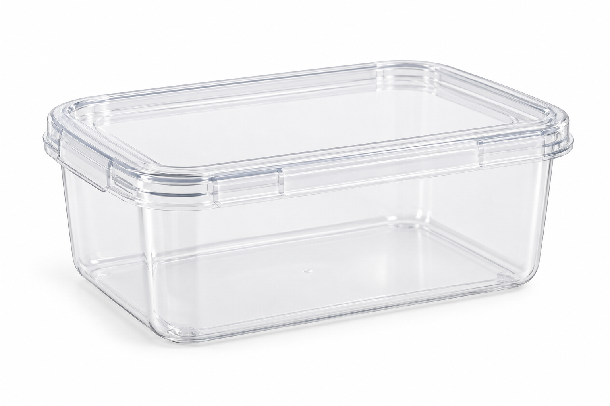

التمرين هو أفضل طريقة لتعزيز التعلم
5 أسئلة
وهناك تلميح منذ البداية! أجيبوا بشكل صحيح عن 4 أسئلة أو أكثر للتقدم.
في الهاتف المحمول، ما هي خصائص المواد المكوّنة له؟
اختاروا جميع الإجابات الصحيحة

أي من الخيارات هي خصائص المادة؟
اختاروا جميع الإجابات المناسبة.

انظروا إلى الجدول الموجود على اليسار، وهو يصف مواد 3 أجزاء في سماعات الرأس.
ما هي المادة التي يصنع منها القوس؟
| جزء في السماعات | مادة | خاصية بارزة |
|---|---|---|
| القوس | بلاستيك | ليونة |
| وسادة الأذن | رغوة الذاكرة | النعومة |
| توصيل داخلي | معدن | الموصلية الكهربائية |
أكملوا الفقرة:
اضغطوا على الصورة التي تعكس مادة مُعالَجة:

جذع شجرة

صوف مجزوز

مكعب بلاستيكي

حصاة نهر
عمل رائع!
فيما يلي تمرينان إضافيان بمستوى صعوبة أعلى
تخيّلوا سبيكة ذهب تبدو مستديرة وملساء جدًا.
هل يمكن أن نحدد فورًا أنه خضع للمعالجة؟
استعينوا بالجدول أدناه واسحبوا كل خاصية إلى المكان المناسب:
| الجسم المفحوص | مادة | الكتلة (غرام) | حجم | لون | ليونة |
|---|---|---|---|---|---|
| علبة صغيرة | بلاستيك | 40 | صغير | أزرق | متوسطة |
| علبة كبيرة | بلاستيك | 120 | كبير | أزرق | متوسطة |
خصائص الجسم
خصائص المادة

تلميح
فكّروا في المادة التي أنتجها الإنسان أو غيّرها في عملية المعالجة.
تلميح
فكّروا كمهندسين ومهندسات: لا نختار المادة بحسب المظهر فقط، بل بحسب ما يجب أن يؤديه الجزء المخصص.
تلميح
فكّروا: ما هي خصائص المادة التي تبقى متطابقة دائمًا؟
تلميح
تذكروا: الخصائص تصف المادة التي يتكوّن منها الجسم. على سبيل المثال، الشفافية والرائحة وحالة المادة هي خصائص تصف المادة. أيّ من الإجابات يمكن أن تصف المادة التي يصنع منها الهاتف؟